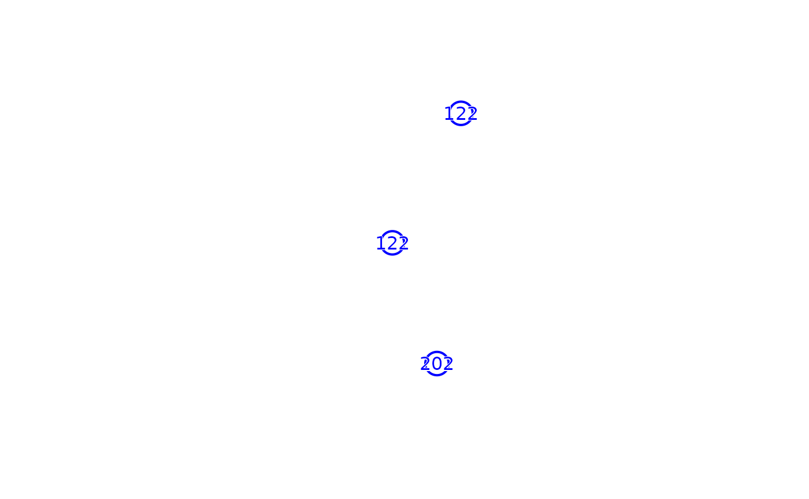

Check the crown file compatibility
Value
Text that give you information about your file. Indicates whether your file will be compatible or not for the other functions of the package. Pay attention to the line starting with '– ERROR –'.
Examples
library(sf)
#> Linking to GEOS 3.10.2, GDAL 3.4.1, PROJ 8.2.1; sf_use_s2() is TRUE
library(dplyr)
#>
#> Attaching package: ‘dplyr’
#> The following objects are masked from ‘package:stats’:
#>
#> filter, lag
#> The following objects are masked from ‘package:base’:
#>
#> intersect, setdiff, setequal, union
library(terra)
#> terra 1.7.83
mean_lat <- 46.07998
sd_lat <- 0.1
mean_long <- 8.931849
sd_long <- 0.1
set.seed(42)
dat_sim <- data.frame(lat = rnorm(3, mean = mean_lat, sd = sd_lat),
long = rnorm(3, mean = mean_long, sd = sd_long))
dat_sf <- sf::st_as_sf(dat_sim, coords = c("long", "lat"), crs = 4326) %>%
sf::st_transform(3035)
# Buffer circles by 100m
crownFile <- sf::st_buffer(dat_sf, dist = 1000) %>%
dplyr::mutate(id = c(122,202,122),
family = c('Fabaceae', 'Ochnaceae', 'Fabaceae'),
gen = c('Newtonia','Lophira','Guibourtia'),
tx_sp_lvl = c('Newtonia leucocarpa','Lophira alata','Guibourtia tessmannii'),
plot_name = 'mbalmayo_pheno_observatory',
code_sp = c(12856, 1690, 5691))
base::plot(crownFile$geometry, border = 'blue', lwd = 2)
terra::text(terra::vect(crownFile), labels="id", halo = TRUE, col = 'blue')

check_crownFile(crownFile)
#> ########## VARIABLES CHECK ##########
#> - -
#> --- OK ---- : geometry
#> --- OK ---- : id
#> --- OK ---- : family
#> -- ERROR -- : gen variable missing or not well named
#> -- ERROR -- : tx_sp_lvl variable missing or not well named
#> --- OK ---- : plot_name
#> --- OK ---- : code_sp
#> - -
#> - -
#> ########## CRS ##########
#> - -
#> CRS : EPSG:3035
#> - -
#> - -
#> ########## DUPLICATED ID CHECK ##########
#> - -
#> -- ERROR -- : The following id are duplicated :
#> 122